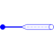

SplitToSubsystemsSplit m phases to subsystems |

|
Information
This information is part of the Modelica Standard Library maintained by the Modelica Association.
Splits the m phases in plug_p into subsystems, i.e., mSystems plugs with mBasic pins according to phase orientation described in the users guide.
Parameters (3)
| m |
Value: 3 Type: Integer Description: Number of phases |
|---|---|
| mSystems |
Value: numberOfSymmetricBaseSystems(m) Type: Integer Description: Number of base systems |
| mBasic |
Value: integer(m / mSystems) Type: Integer Description: Phase number of base systems |
Connectors (2)
| plug_p |
Type: PositivePlug Description: Positive polyphase electrical plug with m pins |
|
|---|---|---|
| plugs_n |
Type: NegativePlug[mSystems] Description: mSystems negative polyphase electrical plugs with mBasic pins each |
Used in Examples (1)
|
Modelica.Electrical.Polyphase.Examples Demonstrate a polyphase diode rectifier |